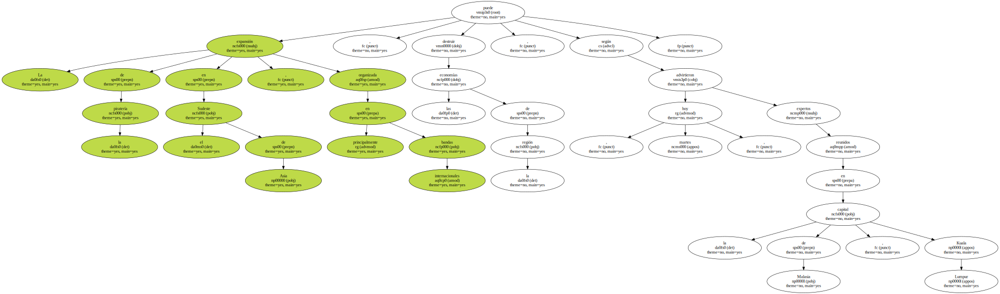
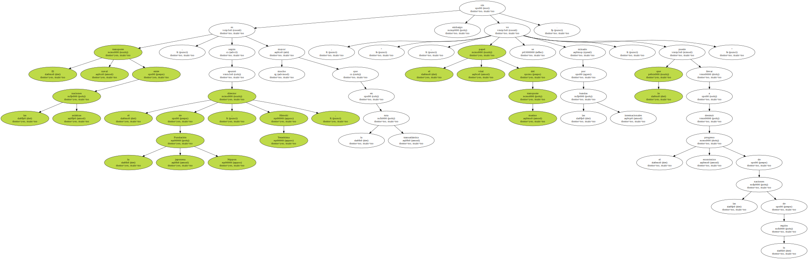
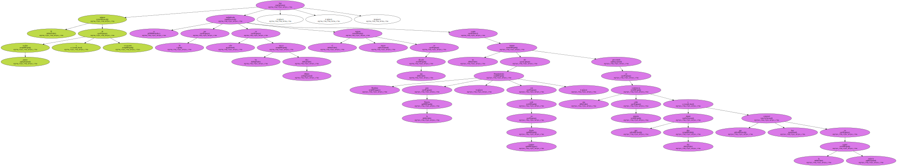
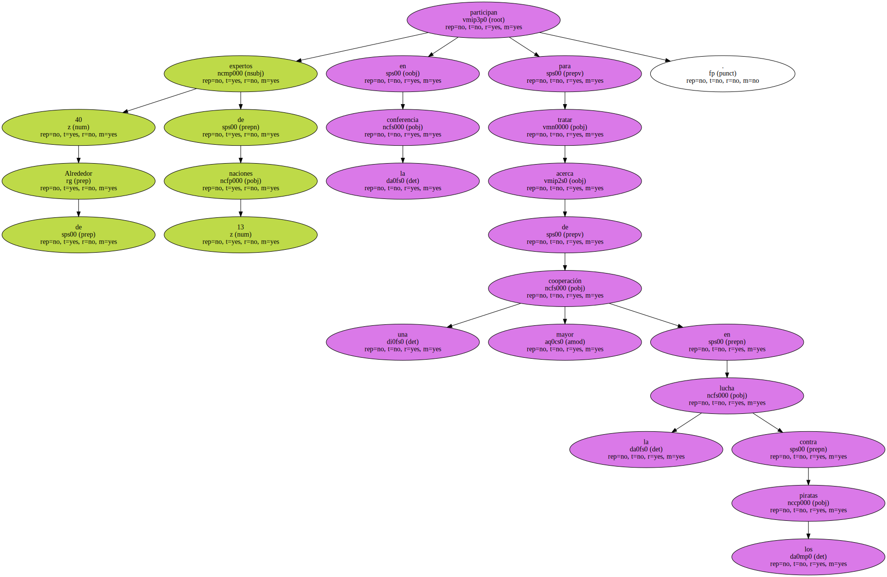

La expansión de la piratería en el Sudeste de Asia , organizada principalmente en bandas internacionales , puede destruir las economías de la región , según advirtieron hoy , martes , expertos reunidos en la capital de Malasia , Kuala Lumpur.
El transporte naval entre las naciones asiáticas , según apuntó el director de la japonesa Fundación Nippon , Hiroshi Terashima , es mucho mayor que en la ruta transatlántica , " sin embargo , el papel vital del transporte marino se ve minado por las bandas internacionales , lo que puede llevar a destruir el progreso económico de las naciones de la región ".
Las navieras de Japón , de otras naciones del lejano oriente , de Oriente Medio y de Europa han mostrado su preocupación por los ataques contra buques que navegan por el Estrecho de Malaca , el Mar de China Meridional o las rutas entre Singapur e Indonesia.

El número de asaltos piratas o secuestros se han multiplicado por 30 sólo en los últimos diez meses , el mayor registro en una década , según un informe del Departamento Marítimo para la Piratería , con sede en Kuala Lumpur , presentado en una conferencia sobre piratería que durará dos días y que comenzó hoy en la capital malasia.
Alrededor de 40 expertos de 13 naciones participan en la conferencia para tratar acerca de una mayor cooperación en la lucha contra los piratas.
